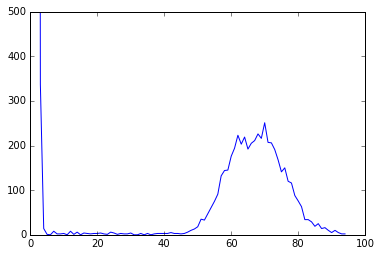
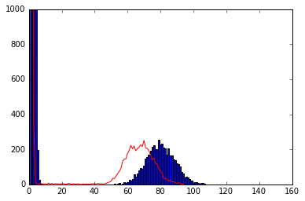

In [1]:
%matplotlib inline
import numpy as np
import matplotlib.pyplot as plt
In [2]:
x = !pwd
In [3]:
mkdir errhist
mkdir: errhist: File exists
In [4]:
cd errhist
/Users/t/dev/zaok/errhist
In [5]:
#Ck = C*(L-k+1)/L.
def cov_k(C, L, k):
return C*(L-k + 1)/float(L)
def cov(C_k, L, k):
return C_k * float(L) / (L-k+1)
print(cov_k(100, 1000, 31))
print(cov(97, 1000, 31))
97.0
100.0
In [6]:
!~/dev/nullgraph/make-random-genome.py -s 1 --name foo -l 5000 > genome.fa
Using random seed: 1
In [7]:
!~/dev/nullgraph/make-reads.py -S 1 -r 100 -C 100 genome.fa > reads.fa
genome size: 5000
coverage: 100.0
readlen: 100
error rate: 0.01
Read in template genome foo of length 5000 from genome.fa
Generating 5000 reads of length 100 for a target coverage of 100.0 with a target error rate of 0.01
3186 of 5000 reads mutated; 5020 total mutations
In [8]:
!abundance-dist-single.py -k 20 -M 1e8 reads.fa reads.hist -s
|| This is the script abundance-dist-single.py in khmer.
|| You are running khmer version 2.0+127.g1c4f5ac.dirty
|| You are also using screed version 0.9
||
|| If you use this script in a publication, please cite EACH of the following:
||
|| * MR Crusoe et al., 2015. http://dx.doi.org/10.12688/f1000research.6924.1
|| * Q Zhang et al., http://dx.doi.org/10.1371/journal.pone.0101271
|| * A. D\xf6ring et al. http://dx.doi.org:80/10.1186/1471-2105-9-11
||
|| Please see http://khmer.readthedocs.org/en/latest/citations.html for details.
PARAMETERS:
- kmer size = 20 (-k)
- n tables = 4 (-N)
- max tablesize = 2.5e+07 (-x)
Estimated memory usage is 1e+08 bytes (n_tables x max_tablesize)
--------
making countgraph
building k-mer tracking graph
kmer_size: 20
k-mer countgraph sizes: [22727271, 22727269, 22727267, 22727265]
outputting to reads.hist
consuming input, round 1 -- reads.fa
Total number of unique k-mers: 72178
preparing hist from reads.fa...
consuming input, round 2 -- reads.fa
wrote to: reads.hist
In [9]:
#np.loadtxt?
z = np.loadtxt('reads.hist', skiprows=1, delimiter=',')
plt.plot(z[:,0], z[:,1])
plt.axis(ymax=500)
Out[9]:
(0.0, 100.0, 0.0, 500)

In [11]:
L = 5000
C = 100
e = 0.01
k = 20
RL = 100
s = np.random.poisson(C-(e*RL)*k, L)
t = np.random.poisson((C - k) * e, int(L * 3 * k / 2))
In [12]:
tt = np.array(list(t) + list(s))
c2, b2, i2 = plt.hist(tt, 150, range=(1, 150))
plt.plot(z[:,0], z[:,1], 'r-')
plt.axis(ymax=1000)
#plt.axis(xmax=20)
Out[12]:
(0.0, 160.0, 0.0, 1000)

In [ ]:
In [ ]: